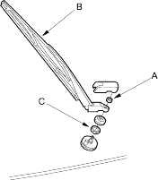
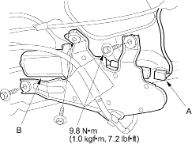

- Open the tailgate and remove the tailgate lower panel (see page 20-209).
- Remove the mounting nut (A), wiper arm (B) and special nut (C).

- Disconnect the 4P connector (A) from the wiper motor (B).

- Remove the three bolts and wiper motor.